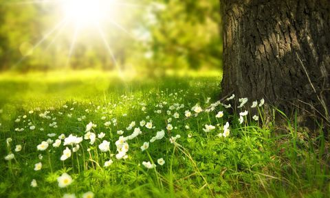

Spring Festival


The spring time celebration of Easter is a Christian tradition marking the day Jesus Christ is said to have come back to life. The day is a celebration of Christianity, but it’s also a celebration of new beginnings and the changing seasons. In 2023, Easter is celebrated on Sunday, April 9.
On Easter Sunday, people attend church services where they sing and pray. It’s a day for some fun family activities too, like decorating hard-boiled eggs and searching for the hidden treats around the house or yard. The White House even gets in on the action with an egg-rolling competition. Some kids also receive baskets filled with goodies, and many families have big feasts. More Info